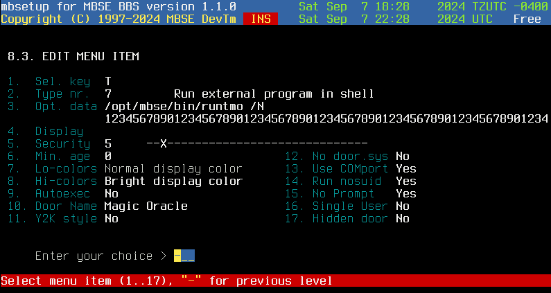

Running DOS doors is possible on systems that can run DOSemu. Unfortunately, this is only possible in Linux as there is no currently supported DOS emulator for BSD.
VERY IMPORTANT!
Installing DOSemu is not very difficult but it does involve paying close attention. Here's how to do this in order:
Here's the steps to get this done:
config {
experimental off
sbemu off
mitshm on
vidmode off
x off
net off
debug off
cpuemu on
aspi on
svgalib off
gpm off
alsa off
sndfile off
dlplugins on
plugin_kbd_unicode on
plugin_extra_charsets on
plugin_term on
plugin_X off
plugin_sdl off
plugin_midimisc off
plugin_fluidsynth off
plugin_translate on
plugin_commands on
plugin_demo off
target_bits auto
target_cpu auto
prefix /usr
bindir ${prefix}/bin
sysconfdir /etc/dosemu
libdir ${prefix}/lib
datadir ${prefix}/share
mandir ${prefix}/man
docdir ${datadir}/doc/dosemu
syshdimagedir /var/lib/dosemu
x11fontdir ${datadir}/dosemu/Xfonts
fdtarball dosemu-freedos-bin.tgz
}
This is for systems that do not use X like me. I don't need the sound or the mouse as I am not running X.
If you want to use X on your system, make the following changes to the compiletime-settings file:
vidmode on
x on
svgalib on
gpm on
plugin_X on
I have the sound turned off as I don't want to be bothered by any noises a door may make.
If all is successful, DOSemu will give some additional information for you then you'll be returned to a prompt. From there, type dosemu or, if you are running X, xdosemu and you should see a DOSemu window open. To exit the emulator, type exitemu.
Stuck? Try here for some documentation
1. Copy /etc/dosemu/dosemu.conf into ~/etc/dosemu.
Then edit ~/etc/dosemu/dosemu.conf so that we have a version for
MBSE users. Set the following settings in ~/etc/dosemu (these are
in order from top to bottom in the file):
$_hdimage = "/opt/mbse/var/dosemu/c" $_floppy_a = "" $_xms = (1024) $_ems = (2048) $_dpmi = (0x1000) $_external_char_set = "utf8" $_internal_char_set = "cp437" $_layout = "us" $_mouse_internal = (off) $_mouse_dev = "" $_speaker = "" $_sound = (0) $_pktdriver = (off)
Copy this new file to virtual.conf in ~/etc/dosemu. Modify the line #$_com1 = "" to $_com1 = "virtual".
2. Time to setup the C: drive. Type the following commands in order from /opt/mbse:
3. Now we must install DOS into ~/var/dosemu/c.
You will need to copy the following files into ~/var/dosemu/c:
There are some *NIX utilities ported to DOS in /usr/share/dosemu/drive_z/gnu. You can copy these to ~/var/dosemu/c/util if you want to use them.
4. We must create config.sys and autoexec.bat. These files must have DOS (CR/LF) line endings. You can do that with the joe editor (joe -crlf config.sys). Examples:
config.sys:
SWITCHES=/F DOS=HIGH, UMB DOSDATA=UMB LASTDRIVE=Z FILES=50 STACKS=0 BUFFERS=20 DEVICE=C:\DOSEMU\EMS.SYS REM If you use FreeDOS, add the next line. DEVICE=C:\DOS\NANSI.SYS SHELLHIGH=C:\COMMAND.COM /E:1024 /P SET TEMP=C:\TEMP VERSION=6.22
The VERSION command in CONFIG.SYS only works for FreeDOS. In FreeDOS, the VERSION command is global. Use a setting of 6.22 to imitate DOS 6.2, 5.0 to imitate DOS 5.0, or 7.1 to imitate Windows 98 in DOS mode. This will allow you to run programs that expect those versions, including utilities copied from that particular Microsoft version of DOS. If you like FreeDOS but prefer specific functionality from one of Microsoft's DOS tools, this command allows it. For other versions of DOS, you will need SETVER.EXE and put this command in CONFIG.SYS: DEVICE=C:\DOS \SETVER.EXE. Make sure SETVER.EXE is in ~/var/dosemu/c/DOS.
The NANSI.SYS is for FreeDOS only but you will need some form of ANSI.SYS for DOS doors to run correctly.
autoexec.bat: @ECHO OFF PROMPT $P$G PATH C:\DOSEMU;C:\DOS;C:\UTIL; SET TEMP=C:\TEMP LH C:\DOS\SHARE unix -e
Now we are ready to try it, type mbsedos and the DOS emulator should start. You can leave DOSemu with the command exitemu.
All DOS doors are started using the script ~/bin/rundoor.sh. This script is never started directly. You should make a symlink with the name of the batch file you will use to run the door without the ".bat" extention. For this example:
cd ~/bin ln -s rundoor.sh runtmo
Look at rundoor.sh for the instructions. This file does several things: it prepares the users home directory with the dosemu environment so that dosemu will run for the user then it creates a node directory in the DOS C: drive and copies the door dropfiles into that node directory. Finally, it starts dosemu in virtual comport mode and inserts the commands in DOS to start the door.
But before we can run the door, the door itself must be installed in the DOS partition. In this example I will explain how to install one of my BBS doors for DOS called The Magic Oracle". Start mbsedos and create a directory c:\doors\tmo. Unpack The Magic Oracle in that directory. Test the door with the command oracle /l. Now go to the directory c:\doors and create the file runtmo.bat. That file will be used to start the door. It will be called by c:\doors.bat with two parameters, the name of the door and the nodenumber. Here's what my RUNTMO.BAT looks like:
@echo off c: x00 e b,0,57600 cd \doors\tmo oracle /n%1 /dc:\doors\node%1 x00 cd \doors\node%1 echo y | del *.*
I have X00 in my DOS path so I call it without a path. The last line removes all the files in that node's dropfile directory.
You should exit mbsedos and cd to the door's actual Linux directory like this example's would be ~/var/dosemu/c/doors/tmo. Set any EXE files to read/write/executable for mbse:bbs by running chmod 0770 *.exe. Set all other files to read write for mbse:bbs by running chmod 0660 (filespec). If the permissions are not set right, you will have all sorts of problems (ask me how I know)!
I usually set all files to 0660 then all executables to 0770 in that order. Don't forget to check subdirectories!
We have to make a menu entry to start the door. The Opt. Data line is the command to start the door. The first option, /N passes the node number to the door.

A few settings you should pay attention to when setting up the menu entry:
Option 16 is very important for doors that are not designed for multinode use. Turning this option on will cause MBSE to check if someone is currently in the door and if so, it will send a prompt telling the second user that another user is inh the door and to try again later. Some examples of doors you would use this on: Land of Devastation, The Clans, and Forces of Darkness. Please check the door's instructions to see if you need to set this option.